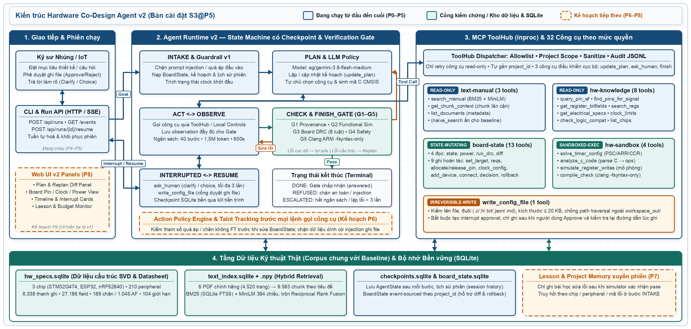

Agent thiết kế phần cứng nhúng có kiểm chứng, phân quyền và đo được
STM32G474 · ESP32 · nRF52840 · FreeRTOS
CO5151 Advanced Agentic AI · Bảo vệ vòng 1
Hà Thanh Bình · Huỳnh Đức Nhâm · La Quang Huy

INTAKE → PLAN → ACT⇄OBSERVE → CHECK → FINISH_GATE; HITL tạm dừng và resume; 4 MCP server; Gate G1–G5; Board State + DRC
Lọc injection trực tiếp; kiểm điện áp theo rail (VDD/VDDH/VBUS) và lớp chân (TT/FT_c/FT); từ chối kèm trích giới hạn.
Trước mọi lời gọi công cụ: trần điện áp, hạn ngạch ghi file, chặn nội dung nhiễm (taint), chặn tham số quá lớn; ghi file cần người duyệt.
G1 nguồn, G2 mô phỏng, G3 DRC, G4 an toàn, G5 hoàn tất; câu trả lời không qua cổng thì không được kết thúc.
Lesson memory: chỉ ghi khi simulator xác nhận một lần tự sửa.
| Hệ | Mô tả |
|---|---|
| S0 | LLM gọi trực tiếp |
| S1 | RAG native |
| S2 / S2D | agent v1 (dữ liệu tay / thật) |
| S3@P7 | agent v3 đầy đủ |
TSR tổng (%), 98 task × 3 seed
Chi phí 0,03 USD/task (giá cấu hình)
TSR (%) theo nhóm task
Một task bị guardrail từ chối oan ở cả 3 seed (4,2 V của nRF gán nhầm cho STM32).
| Nhóm | Độ khớp | Grader | Nhãn mù |
|---|---|---|---|
| C4 xung đột | 42/42 mục nêu chủ động | 86,7 | 93,3 |
| C5 checklist | 95,6% (κ=0,91) | 41,7 | 58,3 |
| C6 an toàn | từ chối kiểu trích dẫn bị chấm warn | 80,0 | 90,0 |
| C8 từ chối | 95,2% (κ=0,53) | 90,5 | 100 |
11 kịch bản ghi sẵn trong viewer; D3 là kiểm tra DRC của Board State, chưa phải luật Policy Engine P6.